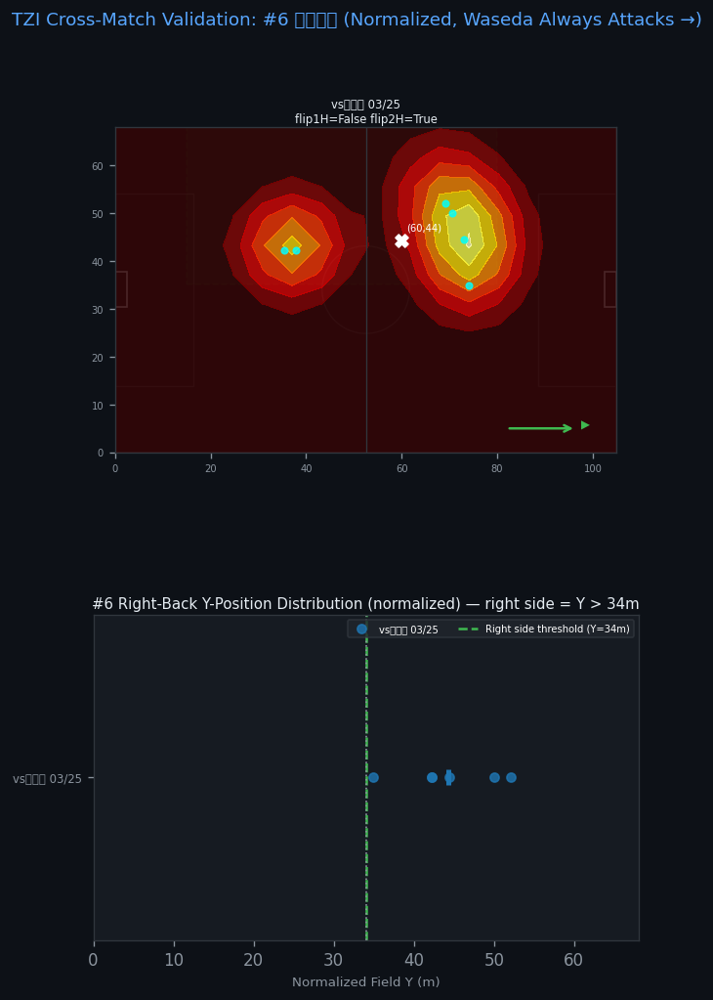

Validation Criterion:
A right-back should appear on the right side of the field (Y ≥ 34m) in ≥55% of sightings
in normalized coordinates (where Waseda always attacks toward X=105).
If the heatmap concentrates at center-line or wrong side, it indicates tracking error.

Per-Match Summary
| Match ID | Opponent | Track ID | Sightings | Centroid X | Centroid Y | % Right Side | Direction |
|---|---|---|---|---|---|---|---|
| 20260325 | vs立教大 03/25 | P05 | 6 | 60.0m | 44.3m | 100% ✓ | flip1H=False flip2H=True |